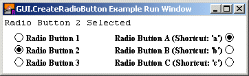

GUI.CreateRadioButton (x, y : int, text : string,joinID : int, actionProc : procedure x ()) : int GUI.CreateRadioButtonFull (x, y : int, text : string,joinID : int, actionProc : procedure x (), alignment : int, shortCut : char) : int
Creates a radio button and returns the radio button's widget ID. A slider is a widget that allows the user to select one of a set of values. It has a real-life equivalent in the old car stereos where a single station is selected at a time. That is, one of the buttons in the radio group is always selected, and if another button in the group is selected, the previously selected button is unselected. Six Radio Buttons in Two Groups A radio group is created by first creating a single radio button. To add another button to the group, a second radio button is created specifying the first radio button in the joinID parameter. Subsequent radio buttons are added, each specifying a previous member of the group in the joinID parameter. The x and y parameters specify the lower-left corner of the radio button (unless alignment is set to GUI.RIGHT, in which case they specify the lower-right corner of the radio button). If these are both 1 and joinID is not zero, then the button will be placed directly below the previous radio button in the group. The text parameter specifies the text (or label) beside the radio button. The joinID parameter specifies a member of the radio group that this widget should join. A joinID of 0 sepecifies this radio button is not a member of any group. The actionProc parameter is the name of a procedure that is called when the radio button is selected. In GUI.CreateRadioButton, the radio button's text is always to the right of the actual radio button. In GUI.CreateRadioButtonFull, the text can be set to the right or left of the radio button with the alignment parameter. For GUI.CreateRadioButtonFull, the alignment parameter specifies the position of the radio button in relation to the text as well as the meaning of the x and y parameters. The alignment parameter is one of 0, GUI.LEFT, or GUI.RIGHT. An alignment of 0 is the default and is the same as GUI.LEFT. GUI.LEFT means the actual box in the check box appears to the left of the check box's label and (x, y) specify the lower-left corner. An alignment of GUI.RIGHT means that the actual box appears to the right of the radio button's label and (x, y) specify the lower-right corner of the radio button. The shortcut parameter is the keystroke to be used as the button's shortcut. A radio button's size is not specified during creation. It is determined based on the size of the text. Instead the user specifies the lower-left corner of the radio button (or the lower-right if the radio button is right justified).

The following program creates six radio buttons in two groups.
import GUI
View.Set ("graphics:350;80")
var radio : array 1 .. 6 of int % The radio button IDs.
procedure RadioPressed
Text.Locate (1, 1)
put "Radio Button " ..
for i : 1 .. 6
if radio (i) = GUI.GetEventWidgetID then
put i ..
end if
end for
put " Selected"
end RadioPressed
radio (1) := GUI.CreateRadioButton (15, maxy 35,
"Radio Button 1", 0, RadioPressed)
radio (2) := GUI.CreateRadioButton ( 1, 1, "Radio Button 2",
radio (1), RadioPressed)
radio (3) := GUI.CreateRadioButton ( 1, 1, "Radio Button 3",
radio (2), RadioPressed)
radio (4) := GUI.CreateRadioButtonFull (maxx 15, maxy 35,
"Radio Button A (Shortcut: 'a')", 0, RadioPressed,
GUI.RIGHT, 'a')
radio (5) := GUI.CreateRadioButtonFull ( 1, 1,
"Radio Button B (Shortcut: 'b')", radio (4), RadioPressed,
GUI.RIGHT, 'b')
radio (6) := GUI.CreateRadioButtonFull ( 1, 1,
"Radio Button C (Shortcut: 'c')", radio (5), RadioPressed,
GUI.RIGHT, 'c')
loop
exit when GUI.ProcessEvent
end loop
When a group of radio buttons is selected, the first radio button created in the group will be the selected one. You can change this by using the GUI.SelectRadio procedure to select a different one. When GUI.CreateRadioButton or GUI.CreateRadioButtonFull is called, the newly created picture will be displayed immediately unless GUI.DisplayWhenCreated has been called with the display parameter set to false. When a radio button is not enabled, the radio button is grayed out and the radio button no longer responds to any mouse clicks or keystrokes until the button is enabled again.
The following GUI subprograms can be called with a radio button as the widgetID parameter: GUI.Show, GUI.Hide, GUI.Enable, GUI.Disable, GUI.Dispose, GUI.GetX,GUI.GetY, GUI.GetWidth, GUI.GetHeight, GUI.SetPosition, GUI.SetSize, GUI.SetPositionAndSize, GUI.SetLabel, GUI.SelectRadio
Exported qualified. This means that you can only call the function by calling GUI.CreateRadioButton, not by calling CreateRadioButton.
gui_selectradio.html for selecting a radio button in a program. See also gui_setlabel.html for changing the radio button's text.